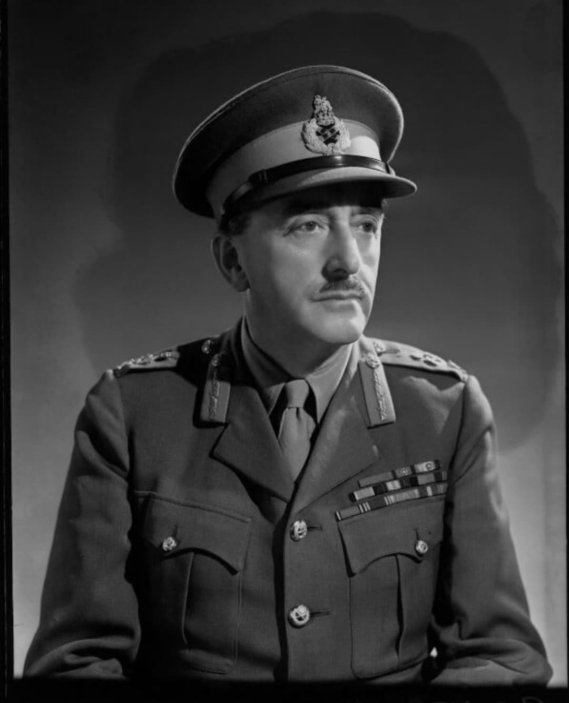

Portrait d’Alan Brooke : regard ferme, uniforme britannique, posture calme et stratégique.
Nom : Alan Francis Brooke
Dates : 23 juillet 1883 – 17 juin 1963
Nationalité : Britannique
Grade : Field Marshal
Fonction : Chef d’état-major impérial (CIGS)
Alan Brooke est considéré comme l’un des plus grands stratèges alliés de la Seconde Guerre mondiale. Méthodique, calme et d’une lucidité rare, il joue un rôle central dans la planification militaire britannique et dans la coordination des opérations alliées.
Il est le principal conseiller militaire de Winston Churchill, qu’il tempère régulièrement lorsque celui-ci propose des opérations trop risquées.
Brooke supervise la défense du Royaume-Uni, la campagne d’Afrique du Nord, l’Italie, et participe à la préparation du Débarquement en Normandie.
Son influence est déterminante lors des conférences alliées (Québec, Téhéran, Yalta), où il représente la vision stratégique britannique.
Brooke entretient une relation complexe mais productive avec Churchill. Il admire son énergie mais s’oppose fermement à ses idées jugées irréalistes.
Leur duo forme l’un des binômes stratégiques les plus importants de la guerre.
Après 1945, Alan Brooke est élevé au rang de Field Marshal et reçoit de nombreuses distinctions. Il publie ses mémoires, qui révèlent l’intensité des débats stratégiques au sommet de l’État britannique.
Aujourd’hui, Alan Brooke est reconnu comme l’un des architectes de la victoire alliée. Son sens de la stratégie, sa rigueur et son sang-froid en font une figure majeure de l’histoire militaire.